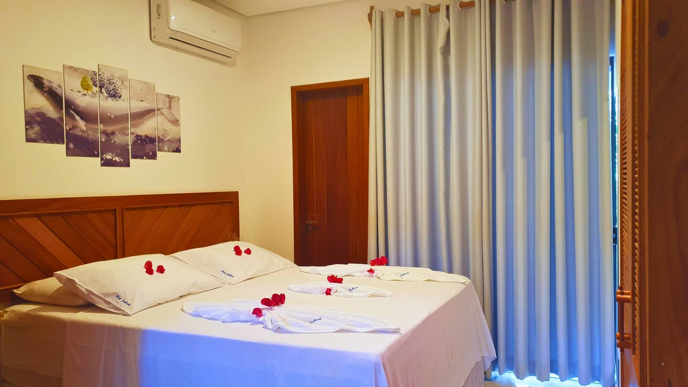
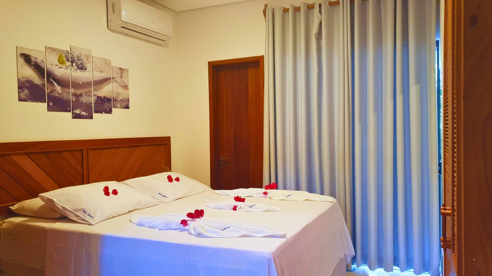
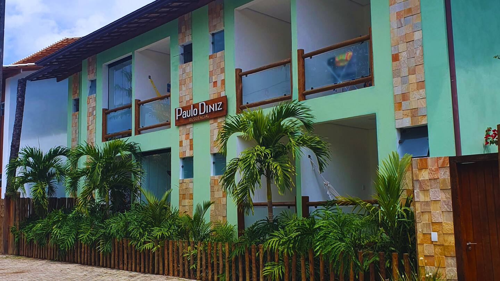
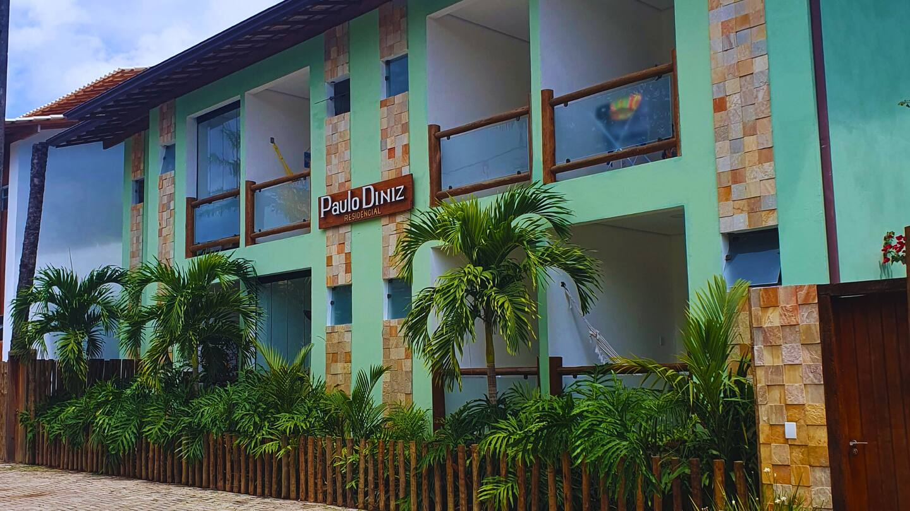

Sobre o Flat
FLAT Jubarte, localizado em Itacaré, é o refúgio perfeito para quem busca conforto e praticidade. Com uma decoração moderna e acolhedora, o flat oferece uma ampla gama de comodidades para garantir uma estadia agradável.
É a escolha ideal para curtir Itacaré com conforto e uma localização privilegiada.
- Ar-condicionado: Para conforto o ano inteiro.
- Quarto: Cama queen size com roupas de cama de alta qualidade.
- Home Office & Wi-Fi: Espaço de trabalho dedicado com internet rápida.
- Cozinha Completa: Air fryer, geladeira, fogão e utensílios.
- Localização: Área tranquila, perto das praias e do comércio.
- Estacionamento Privativo: Para mais conveniência e segurança.
- Varanda: Com rede para relaxar.
- Ambientes Integrados: Sala, cozinha e varanda em harmonia.
Galeria
 



 

Regras da Casa
Por gentileza, cuide do apartamento como se fosse seu. Estas regras ajudam a garantir uma estadia tranquila para todos:
- 👥 Hóspedes: Apenas o número de hóspedes aprovado é permitido. Consulte-nos previamente sobre visitas. Reuniões que causem incômodo aos vizinhos não são permitidas.
- ⏰ Check-in e Check-out: Respeite os horários combinados. Check-in fora do período definido precisa de autorização prévia.
- 🚭 Não Fumar Dentro do Apto: É permitido fumar apenas na varanda. Isso inclui cigarro comum, eletrônico e cannabis.
- 🐶 Animais de Estimação: São bem-vindos, salvo exceções informadas na sua reserva. Avise com antecedência.
- 🔇 Silêncio: Evite barulhos excessivos, especialmente após as 22h. Som alto não é permitido em nenhum horário.
- ⚠️ Danos: Qualquer dano causado deverá ser comunicado. Os hóspedes são responsáveis por reposição ou reparo.
- 🔌 Antes de Sair:
- Desligue os eletrônicos (ar-condicionado, eletrodomésticos, luzes).
- Deixe o apartamento organizado.
- Lave a louça usada e limpe superfícies do banheiro e da cozinha.
- Leve o lixo até a lixeira sinalizada próxima à entrada.
- Devolva a chave na caixa indicada ao lado da porta.
Praias e Cachoeiras Imperdíveis
Se você veio pra Itacaré, prepare-se: tem natureza pra todos os gostos! Aqui vão nossas dicas imperdíveis de praias e cachoeiras pra curtir ao máximo:
🐚 Praia da Concha
Bem no centrinho, tranquila e ótima pra ver o pôr do sol tomando uma água de coco ou uma caipirinha. Puro charme!
🏄 Resende, Tiririca, Costa & Ribeira
Um combo de praias conectadas por trilhas curtas. Tiririca é point dos surfistas. Ideal pra quem curte explorar e variar o visual.
🌴 Havaizinho, Engenhoca & Itacarezinho
Mais afastadas, com aquele visual selvagem e lindo. Itacarezinho mistura vibe rústica com beach club chique. Vale cada minuto.
🌅 Jeribucaçu
Natureza total! Uma trilha linda leva até onde o rio encontra o mar. Uma das paisagens mais incríveis da região.
🥾 Prainha
A queridinha dos aventureiros! Pra chegar, é preciso encarar uma trilha de uns 40 min — mas o visual compensa demais.
💧 Cachoeira do Tijuípe
Quer trocar o sal por água doce? Essa cachoeira é perfeita! Fácil acesso, restaurante gostoso e águas cristalinas pra relaxar depois da praia.
Wi-Fi
Rede: JubarteGuest
Senha: •••••••••••
Precisa de ajuda?
Para suporte imediato, clique no ícone do WhatsApp no canto inferior direito para iniciar um chat comigo a qualquer momento. Se preferir, você também pode usar o chat do Airbnb.